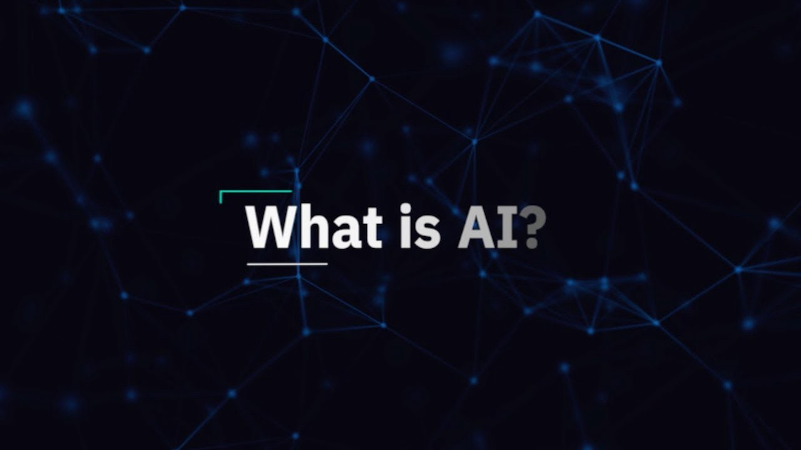
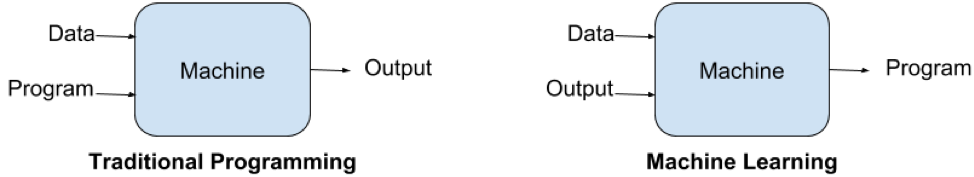
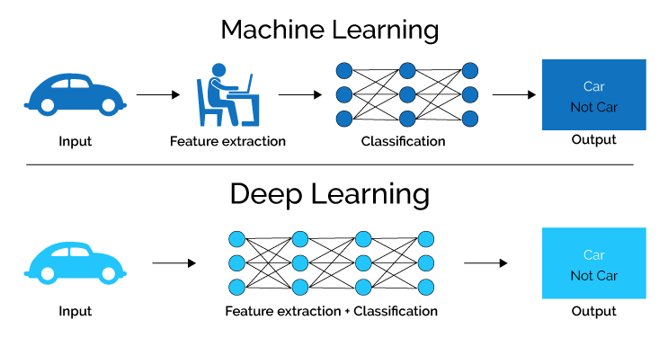
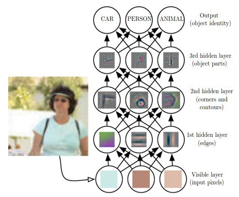

1
A Gentle Introduction to Deep Learning
I am starting this blog to share my understanding of this amazing book Deep Learning that is written by Ian Goodfellow, Yoshua Bengio and Aaron Cournville. I just started reading this book and thought it will be more fun if I share what I will learn and understand throughout the journey of this book. I will try to write a brief and compact form of this book chapter by chapter, so this blog will be a series of blogs about this book.
Before I will jump into our first chapter let me tell you all about this book a little. For those who don’t know, this is like the holy bible for the deep learning enthusiast peoples. Those who wants a detailed mathematical introduction into the world of deep learning must read this book. It is written by pioneers of this field and it is also available free on deeplearning.org.
Now let’s get started

1. Introduction
 What is AI? What is all this fuss about? So let’s start with the formal definition: It is the simulation of human intelligence processes by machines, especially computer systems. These processes include learning, reasoning, and self-correction. But if you want to define AI in some informal and easy language then: It is the phenomenon or task in which we try to create machines which can imitate humans during work i.e. their intelligence and logic. This is not something that started some years ago, inventors have long dreamed about achieving this at least from the time of ancient Greece. Today there are many fields where you can see the applications of artificial intelligence (AI) like intelligent software to automate routine labour, facial recognition and speech recognition on smart phones, in medical diagnoses and scientific research etc. Previously several of the AI projects have sought to be hard coded knowledge using logical inference rules and this is known as knowledge base approach to artificial intelligence. But sadly none of those projects led to major success because it is impossible to a human operator to define all the rules manually for the machine or to find out all the possible cases for a particular work because it can be anything in case of real world.1.1 Machine Learning
These difficulties that were faced by ancient AI systems suggest the need of ability to acquire their own knowledge, by extracting patterns from the raw data. This capability is known as Machine Learning.  Difference between Traditional Programming and Machine Learning Machine learning enabled computers fed on real life raw data or examples and it tries to extract patterns from it and make better decisions by itself. Some of the machine learning algorithms are logistic regression, naive bayes, SVM etc. The performance of these machine learning algorithms depends heavily on the representation of the data that are given. Each piece of information included in the representation is known as features and these algorithms learns how to use these features to extract patterns or to get knowledge. But sometimes it’s difficult to extract know what features should be extracted. For example suppose we wants to detect cars from an image, now we might like to use the presence of wheel as a feature. But it is difficult to describe what a wheel looks like in terms of pixel values. One solution to this problem is to use machine learning to discover not only output from those features(representation) but the features itself. This approach is known as representation learning. Again it is much better if algorithm learns features by itself with minimal human intervention. While designing these algorithms our goal is usually to separate the factors of variation. Now these factors are not always directly observed they might be unobserved factors also that can affect our algorithm. Now of course it can be difficult to extract high-level, abstract features from raw data like speaker’s accent in case of voice recognition because these can be identified by only sophisticated human level understanding of the data.1.2 Deep Learning
Deep Learning can solve this problem in representation learning by introducing representation that are expressed in terms of other, simpler representation.  Difference between Machine Learning and Deep Learning It’s the little details that are vital. Little things make big things happen. ~ John Wooden I think above quote perfectly fits in the working style of deep learning, it enables to build complex concepts out of simpler concepts. To understand it more “deeply” let’s take an example:  Deep Learning Model Above figure is the illustration of a deep learning model. As I have mentioned earlier that it is difficult for an algorithm to understand the raw input data by itself, so deep learning tackled this problem by breaking the input(mappings) into simpler form which is described by each layer of the model. As you can see in the above figure there are five layers and they all are interconnected to each other. If we categorise these layers then in above figure we have one input layer, one output layer and three hidden layers(these can be varied). The input is presented at the visible layer(input layer) and we are able to observe it, that explains the name. Then a series of hidden layers(this data is not given that’s why called hidden) extract abstract features increasingly. We will go into that “increasingly” part later. And then finally we have output layer which represented the output of the model. Now as for the part “increasingly”, hidden layers are responsible for extracting features and say the first hidden layer is responsible for identifying edges in the input image. Given this second layer can easily search for corners ad extended contours and similarly given second layer, the third layer can detect entire parts of specific objects and this also explains the interconnectivity of the layers.